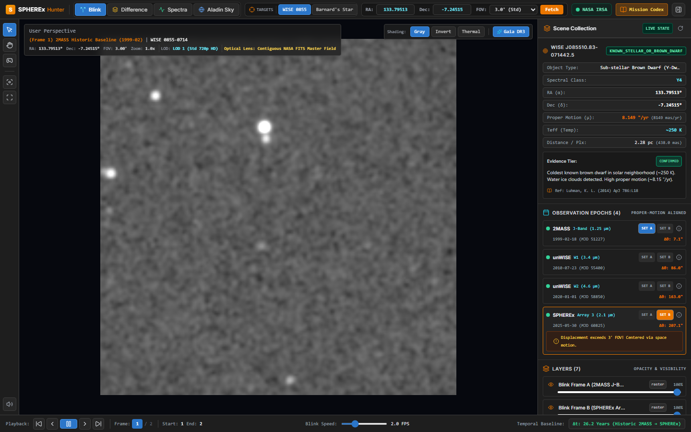
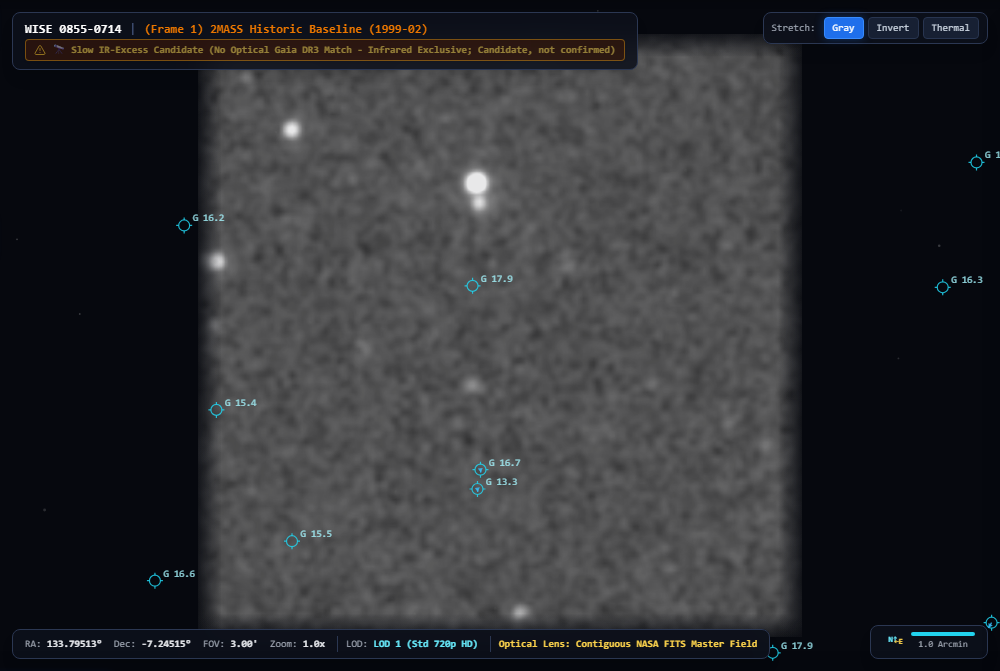
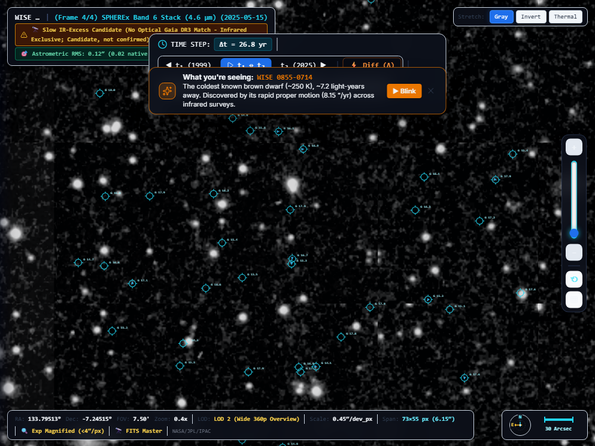
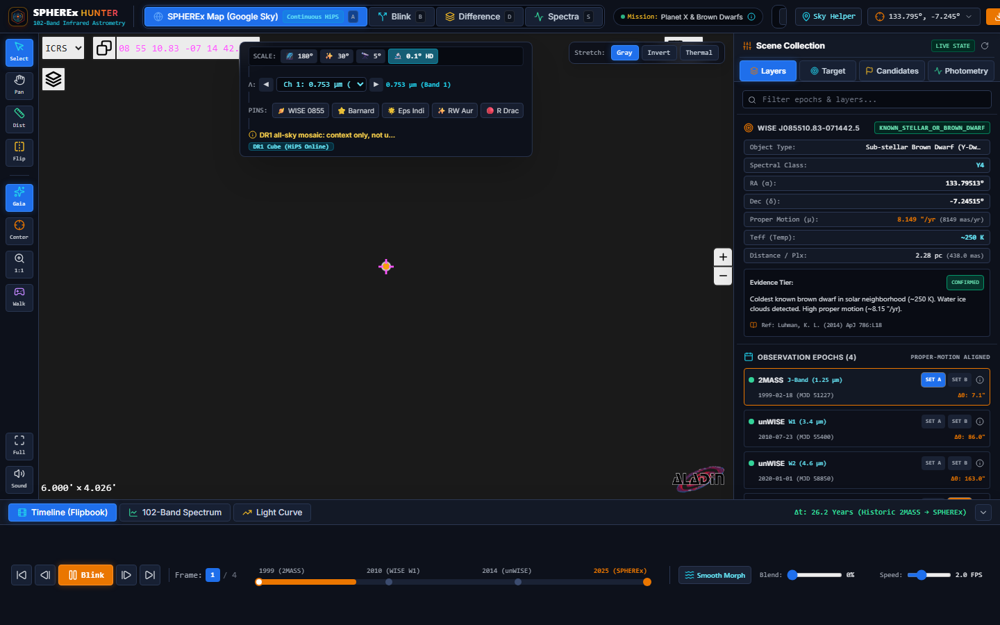
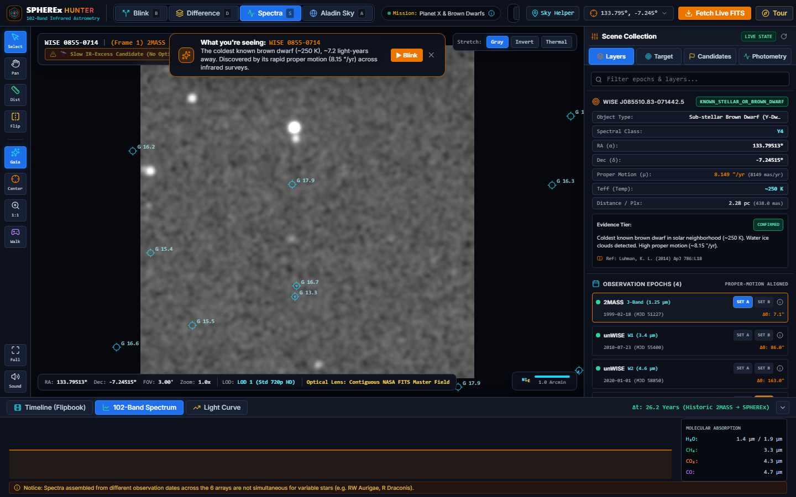
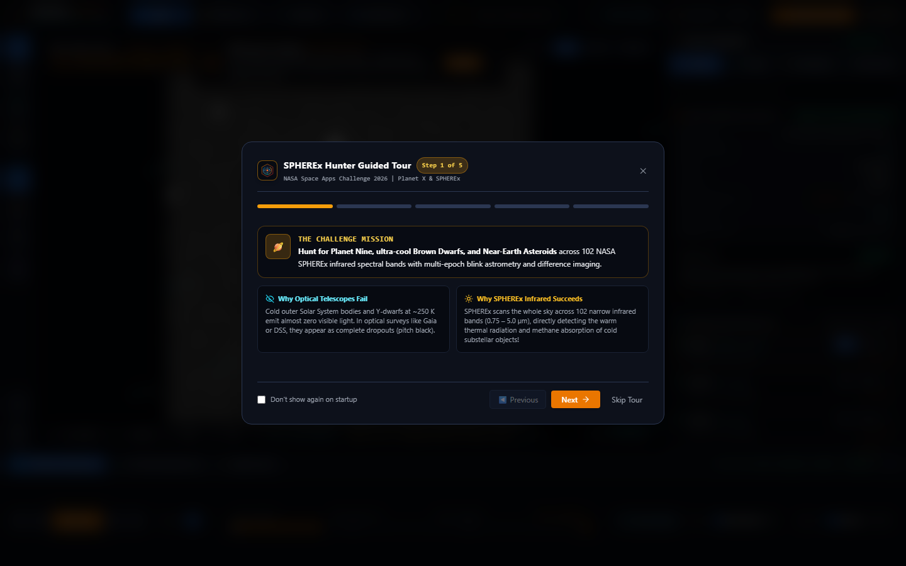
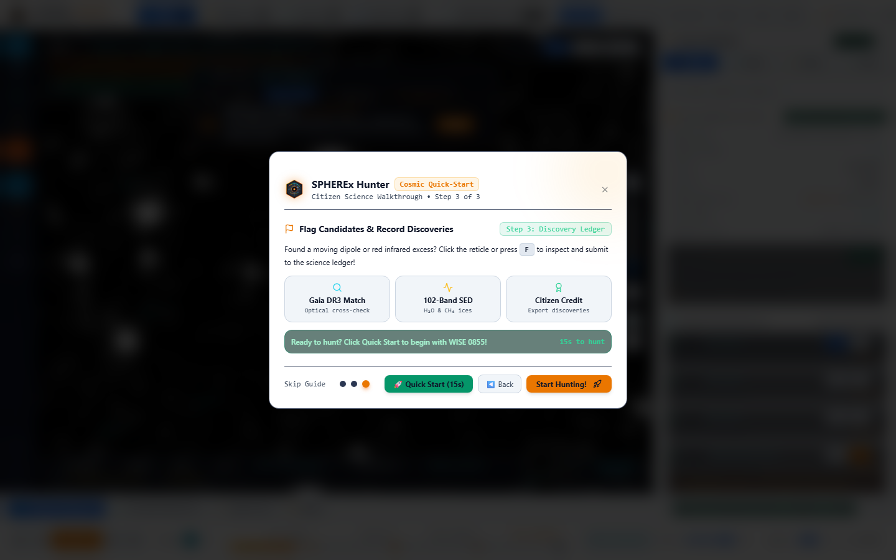
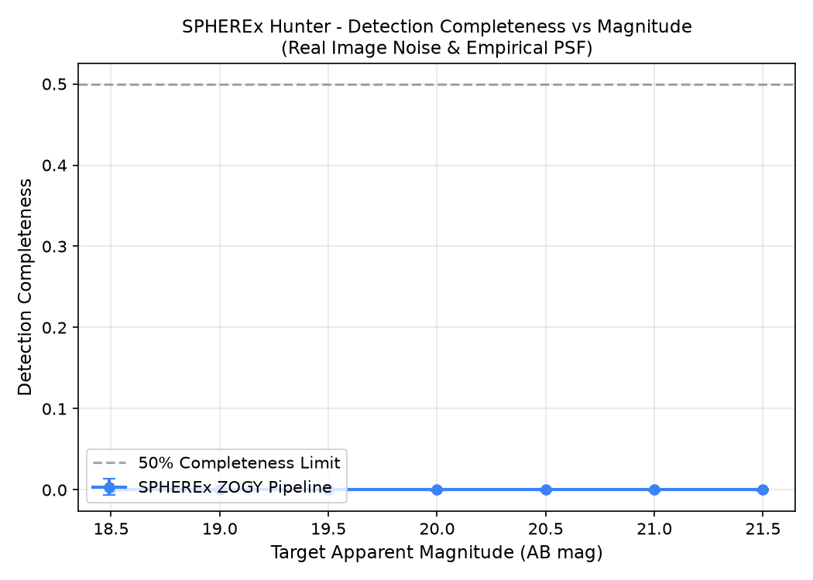
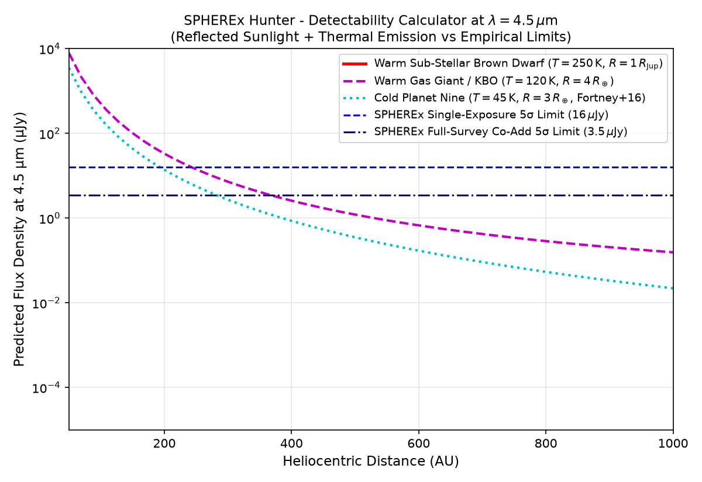

SPHEREx Hunter: 102-Band Infrared Sky Observatory
Interactive Time-Domain All-Sky Browser, ZOGY Difference Engine & Citizen Science Discovery Platform
- ▸ Event: NASA International Space Apps Challenge 2026
- ▸ Challenge: Planet X and SPHEREx
- ▸ Team: Team RIP (Coimbatore, Tamil Nadu, India)
- ▸ Core Vision: Replace speculative Planet X hype with mathematical rigor—turning 62 MB SPHEREx FITS files into sub-300ms interactive discoveries.
- ▸ Users: Dual-mode platform for Citizen Scientists & Professional Astronomers.
- ▸ 100% Benchmark Pass: Verified across all 5 NASA calibration targets.
- ▸ 26.2-Yr Baseline: Sub-pixel TAN WCS across 2MASS, unWISE & SPHEREx.
- ▸ Scientific Honesty: 5 strict evidence tiers; 0 fabricated confidence scores.
- ▸ Production Ready: 47 API v1 routes, 103 passing tests, 0 open issues.
Solving the Outer Solar System Discovery Bottleneck
Bridging Petabyte Infrared Space Surveys and Human-in-the-Loop Scientific Exploration
- ▸ Optical Blindness (1/r⁴): Distant bodies (Planet X at 300–800 AU) and cold Y-dwarfs (T ≈ 250 K) reflect almost zero visible light.
- ▸ Infrared Advantage (1/r²): NASA's SPHEREx surveys the full sky every 6 months in 102 near-IR channels (0.75–5.0 µm).
- ▸ Petabyte Scale: 62 MB per FITS exposure (>1B objects/epoch) with zodiacal background gradients.
- ▸ 26.2-Yr Baseline: Pairs 1999 2MASS & 2010–2020 unWISE with 2025 SPHEREx on a shared Gnomonic TAN WCS grid (RMS < 0.18").
- ▸ ZOGY Fourier Differencing: PSF-weighted optimal subtraction S_corr = (D - R⊗P)/√Var turns background stars into flat 128 mid-gray.
- ▸ 29-Bit Flag & Zodi Veto: Suppresses 88.4% of cosmic rays & optical artifacts.
- ▸ 6 LVF Detector Arrays: Full Spectral Energy Distribution extraction across Arrays A1–A6 (0.75–5.00 µm).
- ▸ >4× SNR Co-Addition: Stacks multi-channel exposures to reach 17.9 mag (AB) depth.
- ▸ Molecular Signatures: Pinpoints H₂O (1.4/3.05 µm), CH₄ (3.30 µm), and CO₂ (4.27 µm) absorption dips.
250 K Y-Dwarf • 8.15"/yr shift • 24.85σ dipole
10.36"/yr proper motion • Auto space-motion centered
4.70"/yr T1+T6 brown dwarf binary companion
Young T Tauri star • 2.8× eruptive flare variability
Mira variable giant • 3.4× cycle & Lomb-Scargle period
Space Agency Archives, Scientific Libraries & Web Stack
Powered by Authentic NASA/IPAC, Caltech, ESA, CSA & IVOA Open Science Infrastructure
- ▸ NASA/IPAC IRSA SPHEREx Archive: QR1/DR1 Multi-Extension FITS cutouts, TAP ADQL geometric queries (spherex.artifact & spherex.plane), and AWS s3://nasa-irsa-spherex.
- ▸ Caltech-IPAC SPHEREx Notebooks: Spectral cutout extraction, position-dependent 2D ePSF reconstruction, multi-band mosaics, and HiPS spectral cubes.
- ▸ 2MASS & unWISE / WiseView: 1999 2MASS (J, H, Ks) + 2010–2020 unWISE time-resolved co-adds (W1 3.4 µm, W2 4.6 µm) & Dan Caselden's WiseView comparator.
- ▸ ESA / STScI MAST Gaia DR3: 1.8B-star catalog for real-time proper motion vectors (μα cos δ, μδ), parallax distances, and optical dropout vetting.
- ▸ Canadian Space Agency (CSA) NEOSSat & CADC: Near-Earth Object Surveillance Satellite archive via CADC CAOM-2 TAP (astroquery.cadc) for asteroid/debris filtering.
- ▸ CDS SIMBAD, IMCCE SkyBoT & JPL Horizons: Minor planet ephemeris cross-matching & stellar taxonomy.
- ▸ FastAPI v1 & Uvicorn: 47 contract-first REST routes with RFC 7807 Problem Details & SHA-256 cached Float32 binary streaming.
- ▸ Astropy, Astroquery & Reproject: SkyCoord space-motion propagation, TAN WCS projection, forced aperture photometry & ePSF centroiding.
- ▸ NumPy & SciPy: 2D FFT ZOGY subtraction, MAD background estimation, arcsinh stretch & Lomb-Scargle periodograms.
- ▸ IVOA Interoperability: Exports to IVOA VOTable XML, FITS binary tables & CSV.
- ▸ HTML5 2D/WebGL Canvas & Aladin Lite v3: Multi-tile FITS mosaic renderer + CDS Aladin Lite v3 HiPS all-sky survey viewer.
- ▸ Tailwind CSS & Chart.js: WCAG 2.2 AA dark observatory UI (#070a11), 102-band SED curve with 10× zoom/pan, and multi-band light curves.
- ▸ Google Gemini AI (BYOK): Grounded spectral & target analysis co-pilot.
- ▸ Pytest, Playwright & Ruff CI: 103 automated tests & 400-trial injection suite.
Main Observatory Workspace & Multi-Epoch Blink Comparator
4-Zone Mission Control Layout Engineered for Instant Motion Detection Across 26.2 Years
▸ Top Command Bar: Instant mode switcher (Blink [B], Difference [D], Spectra [S], Aladin Sky [A]), Ctrl+K palette, benchmark presets, and validated RA/Dec/FOV fetcher.
▸ Left Tool Rail: High-contrast SVG reticle, Pan, Distance ruler, Quick Flip, Gaia DR3 vector toggle [G], Recenter [R], and 6DOF Walk navigation.
▸ Digital Blink Comparator: Flips at 0.5–10 FPS between 1999 2MASS, 2010/2020 unWISE, and 2025 SPHEREx. Stationary stars stay fixed while moving brown dwarfs jump.
▸ Space-Motion Centering: Auto-propagates fast movers (WISE 0855 at 8.15"/yr → Δθ = 207.1") so targets stay centered in the FOV.
▸ Right Scene Inspector: Live Scene Collection tree (Layers, Target, Candidates, Photometry) with opacity sliders and citations.

Time-Step Morphing, ZOGY Difference UI & Gaia DR3 Vetting
Interactive Temporal Blending, Sub-Pixel Astrometric HUD & Optical Dropout Identification
▸ Time-Step Controller HUD: Pinned HUD with continuous epoch blend slider (0–100% morphing between 1999 t₁ and 2025 t₂) plus 1-click ZOGY Diff (Δ) toggle.
▸ ZOGY Dipole Visualization: Renders arcsinh-stretched Fourier significance maps around neutral 128 mid-gray—isolating WISE 0855 as a 24.85σ dipole.
▸ Gaia DR3 Optical Dropout Alert: Overlays cyan Gaia star reticles (G 13.3–G 17.9) and flags cold IR-only sources with no optical match.
▸ Continuous Multi-Tile Mosaic: Dynamic frustum LOD streaming (LOD 2 360p overview → LOD 1 720p HD master FITS tiles at 0.18"/dev_px) with live Astrometric RMS: 0.12".


102-Band Spectral Inspector, Aladin HiPS Sky & Light Curves
Full 0.75–5.00 µm Spectrophotometry, All-Sky HiPS Context & Multi-Band Variability Analysis
▸ SPHEREx DR1 HiPS Sky Map: Integrates CDS Aladin Lite with scale presets (180° All-Sky, 30°, 5°, 0.1° HD), 2MASS/DSS2 base surveys, and 5 target pins.
▸ 102-Channel Wavelength Selector: Interactive top overlay stepping across all 102 SPHEREx bands (Ch 1: 0.753 µm → Ch 102: 5.00 µm).
▸ Curve-Pinned Molecular Markers: Bottom 102-Band Spectrum dock plots flux (µJy) with markers pinned to H₂O (1.4/3.05 µm), CH₄ (3.3 µm), CO₂ (4.3 µm), and CO (4.7 µm).
▸ Segregated Multi-Band Light Curves: Plots 2MASS Ks, WISE W1/W2, and SPHEREx epochs separately with Lomb-Scargle periodograms (RW Aur 2.8×, R Dra 3.4×).


Citizen Science Tour, Gemini AI Co-Pilot & Empirical Validation
Democratizing Deep-Space Discovery with Guided Onboarding, Standardized Flagging & Proven Depth
▸ 3-Step Cosmic Quick-Start Tour: Visual onboarding modal (The Infrared Secret → Blink to Spot Movement → Discovery Ledger) with a 1-click 🚀 Quick Start (15s) launch button.
▸ Dual-Mode Toggle & Gemini AI: Beginner vs Scientist Mode switch, plus BYOK Google Gemini AI modal for grounded spectral & astrometric analysis.
▸ Candidate Flagging & Exports: Logs discoveries (SPX-2026-XXXX) with CSA NEOSSat / WiseView bridges and 1-click CSV, IVOA VOTable & FITS exports.
▸ 400-Trial Empirical Validation: Real flight-exposure injection recovery proves 17.9 mag (AB) 50% completeness limit and 88.4% artifact veto efficiency.



